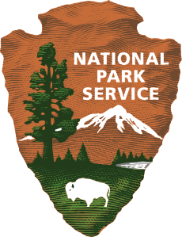

849 Wikipedia articles in 73 languages in which images from Category:Images from NPGallery are used, grouped by language
This overview is based on this XML output of the GLAMorous tool d.d. 24-01-2024.
It was generated using the GLAMorousToHTML Python script.
Also see the documentation of this tool.
Available languages
English (352)
French (80)
German (53)
Russian (25)
Spanish (25)
Cebuano (22)
Italian (19)
Czech (18)
Dutch (15)
Egyptian Arabic (14)
Ukrainian (14)
Japanese (12)
Arabic (12)
Portuguese (11)
Vietnamese (11)
Hebrew (9)
Serbian (9)
Swedish (8)
Indonesian (8)
Polish (8)
Basque (7)
Hungarian (7)
Persian (6)
Welsh (5)
Danish (5)
Lithuanian (5)
Urdu (5)
Romanian (5)
Chinese (4)
Finnish (4)
Navajo (4)
Catalan (4)
West Frisian (4)
Esperanto (4)
Nynorsk (4)
South Azerbaijani (3)
Latvian (2)
Bangla (2)
Belarusian (2)
Hausa (2)
Afrikaans (2)
Nynorsk (2)
Galician (2)
Greek (2)
Eastern Armenian (2)
Standard Estonian (2)
Bulgarian (2)
Slovak (1)
Igbo (1)
Ladin (1)
Azerbaijani (1)
Balinese (1)
Tagalog (1)
Moksha (1)
Malayalam (1)
Aragonese (1)
Punjabi (1)
Chuvash (1)
Tamil (1)
Kazakh (1)
Tajik (1)
Mazanderani (1)
Cantonese (1)
Croatian (1)
Slovene (1)
Turkish (1)
Kotava (1)
Macedonian (1)
Western Armenian (1)
Cornish (1)
Latin (1)
Breton (1)
Ido (1)
English (352)
1790–91 United States Senate elections |
1834 Philadelphia race riot |
1886 eruption of Mount Tarawera |
1922 in architecture |
1992 Democratic Party presidential primaries |
2004 California wildfires |
36-foot motor lifeboat |
5th New York Cavalry Regiment |
8th Infantry Regiment (United States) |
A. Armstrong Farm |
African American Civil War Memorial Museum |
Airport Tower (Canyonlands) |
Alanson Merwin Randol |
Alaska Native Claims Settlement Act |
Albertype |
Alexander McClew Farm House |
Alexander Plantation House |
Alfred E. Bates |
American Climate Corps |
American Revolution Statuary |
American bison |
Andrew W. Mellon Memorial Fountain |
Apache Crown Dance |
Appomattox Court House National Historical Park |
Arno B. Cammerer |
Autograph Rock Historic District |
Backpacking (travel) |
Baltica |
Battle Road |
Bench Lake |
Bidalasana |
Big House (Moccasin, Arizona) |
Black studies |
Boot Monument |
Bordeaux (St. Thomas, U.S. Virgin Islands) |
Burroughs Mountain |
Cadet Peak |
Cambodian art |
Caper Peak |
Capt. Thomas Blanch House |
Capulin Volcano National Monument |
Carl H. Shier Farm |
Carter G. Woodson |
Chouteau, Oklahoma |
Cimarron Historic District |
Clark Brothers Factory No. 1 |
Climate change in Michigan |
Co-benefits of climate change mitigation |
Cohort (educational group) |
Comet Falls |
Conrad L. Wirth |
Corallorhiza |
Crossed letter |
Cyprinodon |
Dall sheep |
Daniel O'Sullivan House |
Daniel Ruggles |
Del Campo Peak |
Destruction Island |
Director of the National Park Service |
District School No. 1 (Panton, Vermont) |
Douglas fir |
Drakesville, Iowa |
Dune |
Dwight D. Eisenhower Memorial |
Eagar School |
Eagar Townsite Historic District |
Egotism; or, The Bosom-Serpent |
Electric vehicle |
Eli Morse Sawmill Foundations |
Elizabeth Cushman Titus Putnam |
Elizabeth Shoumatoff |
Elm Grange |
Erythronium |
Estate Brewers Bay |
Ethel Roosevelt Derby |
Fairfield County Jail |
Fallen Timbers Battlefield |
Fanny Steers |
Fay Peak |
February 1926 |
Federal Hall |
Ferdinand Ewert Building |
Fields Heirs |
Flowstone |
Flying boat |
Fort Spokane |
Fort Totten State Historic Site |
Francis Jehl |
Francisco I. Madero |
Frank J. Sprague |
Franklin Medal |
Frederick William Cooke Residence |
Freeman-Hurt House |
Garret Augustus Ackerman House |
Genesee Avenue–Walker Street Historic District |
George Bent |
George Washington Greene |
Geum triflorum |
Gravel Place, Pennsylvania |
Great Smoky Mountains |
Grizzly bear |
Gunsight Peak |
H-58 (Michigan county highway) |
Hamilton Grange National Memorial |
Hard Scrabble and Snow Town |
Hazel Glen |
Helen Rowland (actress) |
Henry D. Cogswell |
Herbert Wendell Gleason |
Hickman Natural Bridge |
Hinds Hotel |
Historic site |
History of the United States Constitution |
Home cinema |
Hoodoo (spirituality) |
House at 209–211 S. Ninth Street |
House at 364 Cedar Avenue |
House at 5556 Flushing Road |
Ice climbing |
Icy Peak |
Independence Monument (Colorado) |
Isaac R. Middlesworth Farm House |
Isaacson Building |
J. McCormack Farm |
James H. Murray House |
James Madison DeWolf |
James Pratt Funeral Service |
James Pym |
James Roosevelt I |
Jane Johnson (slave) |
Jesse H. Buck Farm House |
John Barry (naval officer) |
John McAra House |
John Otis Brew |
John R. Anderson (minister) |
John Van Buskirk Farm House |
John W. Ferguson House |
Jordan Pond House |
Jornada del Muerto |
Joseph B. Campbell |
Julian F. Everett |
KNP Complex Fire |
Kahlert Mercantile Store |
Kautz Glacier |
Kinetoscope |
King Block (New Brunswick, New Jersey) |
Komo Kulshan and his two wives |
Lake Dardanelle State Park |
Lake Mountain Lookout Complex |
Lambert & Bunnell |
Land Run of 1892 |
Las Humanas |
Lawrence Sprague Babbitt |
Lazo Marsh-North East Comox Wildlife Management Area |
Leelanau Peninsula |
List of African-American historic places |
List of Colorado-related lists |
List of First Lady of the United States firsts |
List of Michigan State Historic Sites in Genesee County |
List of Montana state symbols |
List of National Historic Landmarks in Kansas |
List of National Historic Landmarks in Maryland |
List of National Historic Landmarks in Massachusetts |
List of Nevada state parks |
List of Saxifragales, Vitales and Zygophyllales families |
List of U.S. state mammals |
List of amphibians and reptiles of Nebraska |
List of animals of Yellowstone |
List of asanas |
List of caves |
List of cemeteries in Indiana |
List of flora of Washington |
List of governors of Alaska |
List of museums in Washington, D.C. |
List of national parks of the United States |
List of plantations in Kentucky |
List of plantations in the United States |
List of speakers of the Massachusetts House of Representatives |
List of the oldest buildings in Iowa |
List of the oldest buildings in Michigan |
List of the oldest buildings in Nebraska |
List of waterfalls by flow rate |
Lockkeeper's House (Washington, D.C.) |
Longfellow House–Washington's Headquarters National Historic Site |
Los Burros Ranger Station |
Louis S. Slevin |
Lucretia Mott |
M21-1 Adjudication Procedures Manual |
MacGillycuddy's Reeks |
Mafolie Great House |
Main Street Historic District (Flushing, Michigan) |
Maine |
Mammals of Glacier National Park (U.S.) |
March 11–15, 2018 nor'easter |
McWhorter House |
Memorial to the 56 Signers of the Declaration of Independence |
Meridian Hill Park |
Monster Tower |
Montpelier, Idaho |
Mormon Station State Historic Park |
Mormon foodways |
Motion Picture Patents Company |
Mount Carpe |
Mount Fury |
Mount Healy |
Mount Lewis (California) |
Mount Prophet |
Mount Rockwell |
Mount Sefrit |
Mount Tatum |
Mount Vernon Trail |
Muir Woods National Monument |
Munsee |
Murray, Iowa |
Mussel Rock |
Myles Moylan |
Mythology of Benjamin Banneker |
Naches Peak |
Nathan Appleton |
Nathaniel Gorham |
Nathaniel Richardson House |
National Christmas Tree (United States) |
National Historic Landmark |
National Historic Site (United States) |
National Register of Historic Places listings in Addison County, Vermont |
National Register of Historic Places listings in Apache County, Arizona |
National Register of Historic Places listings in Atlantic County, New Jersey |
National Register of Historic Places listings in Bergen County, New Jersey |
National Register of Historic Places listings in Bridgeport, Connecticut |
National Register of Historic Places listings in Cheshire County, New Hampshire |
National Register of Historic Places listings in Cimarron County, Oklahoma |
National Register of Historic Places listings in Downtown Davenport, Iowa |
National Register of Historic Places listings in Genesee County, Michigan |
National Register of Historic Places listings in Hamilton County, Tennessee |
National Register of Historic Places listings in Hancock County, Maine |
National Register of Historic Places listings in Hartford, Connecticut |
National Register of Historic Places listings in Hartford County, Connecticut |
National Register of Historic Places listings in Hunterdon County, New Jersey |
National Register of Historic Places listings in Lewis County, Washington |
National Register of Historic Places listings in Mayes County, Oklahoma |
National Register of Historic Places listings in Middlesex County, New Jersey |
National Register of Historic Places listings in Monmouth County, New Jersey |
National Register of Historic Places listings in Montgomery County, Maryland |
National Register of Historic Places listings in Mount Rainier National Park |
National Register of Historic Places listings in New Haven County, Connecticut |
National Register of Historic Places listings in New London County, Connecticut |
National Register of Historic Places listings in Passaic County, New Jersey |
National Register of Historic Places listings in Rice County, Kansas |
National Register of Historic Places listings in Saddle River, New Jersey |
National Register of Historic Places listings in Southington, Connecticut |
National Register of Historic Places listings in Sullivan County, New Hampshire |
National Register of Historic Places listings in Union County, New Jersey |
National Register of Historic Places listings in Woodford County, Kentucky |
National Register of Historic Places listings in Wyckoff, New Jersey |
National Register of Historic Places listings in northern New Castle County, Delaware |
National Register of Historic Places listings in southern New Castle County, Delaware |
National Register of Historic Places listings in the United States Virgin Islands |
National preserve |
National recreation area |
Native Americans in the United States |
New Britain Opera House |
New Herrnhut Moravian Church |
Nisqually Glacier |
North American Cordillera |
North Platte Regional Airport |
Northeastern United States |
Oak |
October 1965 |
Oregon Trail (Ada County, Idaho segment) |
PS Knoll Lookout Complex |
Padre Island National Seashore |
Paleobiota of the La Brea Tar Pits |
Paramount Theatre (Manhattan) |
Paul Revere Capture Site |
Pedicularis groenlandica |
Pedro Bay, Alaska |
Pictured Rocks National Lakeshore |
Pipe Organ (Colorado National Monument) |
Polychrome Mountain |
Ponca |
Port Oneida Rural Historic District |
President of the Continental Congress |
Productidae |
Prunus pumila |
Queens Well, Arizona |
Querino Canyon Bridge |
Red Face Mountain |
Renee Knake Jefferson |
Ribes bracteosum |
Riprap |
Robe |
Robert Johnson (Tennessee) |
Rock Creek Trails |
Rock glacier |
Royal Typewriter Company Building |
Saguaro National Park |
Samuel Miner House |
Schoolhouse at Truxton Canyon Training School |
Scotch Plains School |
Sequoia National Park |
Sierra Club |
Sixes Hotel |
Sleeping Bear Dunes National Lakeshore |
Snowshoe |
Sonoyta pupfish |
Spanish missions in New Mexico |
Speleothem |
Spirit possession |
Spruce grouse |
Starl House |
Statue of John Barry |
Stehekin, Washington |
Stelljes House |
Stephen Grannis House |
Stone rubbing |
Stonewall Jackson's arm |
Streptanthus carinatus |
Streptanthus cutleri |
Student Conservation Association |
Teklanika River |
Tektite habitat |
Temperance fountain |
The Forty Acres |
The Plaza Grill and Cinema |
Thomas Custer |
Thomas Demarest House |
Three Lakes Patrol Cabin |
Tidal Basin |
Tie Sing |
Tilly Escape |
Timeline of drafting and ratification of the United States Constitution |
Tobias-Thompson Complex |
Tonestus lyallii |
Traditional Hawaiian games |
Trude Lash |
Tsoabichi |
Tufa |
Tutu Plantation House |
United States Coast Guard History and Heritage Sites |
Valentine Wightman House |
Van Gelder House |
Van Trump Falls |
Vigil Peak |
Wally Hickel |
Walnut Lane |
Washer Woman |
Western Maryland Scenic Railroad |
White Sands National Park |
William Henry and Lucinda McCaslin Farm House |
William Lee Stoddart |
Zuñi Mountains
French (80)
Adams National Historical Park |
Arnica |
Autocar des neiges |
Bayside Trail |
Beech Mountain Lookout Tower |
Blackstone River Valley National Historical Park |
Boston African American National Historic Site |
Boston National Historical Park |
Canyon Rim Trail |
Cape Cod National Seashore |
Carl Sandburg Home National Historic Site |
Carriage Paths, Bridges and Gatehouses |
Carter G. Woodson |
Cedar Creek |
Chutes Van Trump |
Clara Barton |
Conducteur de bus |
Conrad L. Wirth |
Conservation et restauration des films |
Couleuvre brune |
Denver & Rio Grande Railroad Box Outfit Car No. 04414 |
Denver & Rio Grande Western Railroad Stock Car No. 5620 |
Denver & Rio Grande Western Railroad Stock Car No. 5679D |
Drakesville (Iowa) |
Déposition (physique) |
Edison Studios |
Edward Hubert Butler Sr. |
Esclavage aux États-Unis |
Espèce erratique |
Fallen Timbers Battlefield and Fort Miamis National Historic Site |
Frederick Law Olmsted National Historic Site |
Gabriel Bernon |
George Washington Birthplace National Monument |
Harriet Robinson Scott |
Isle Royale |
J. Searle Dawley |
John Fitzgerald Kennedy National Historic Site |
Lac George (Washington) |
Lake Mountain Lookout Complex |
Liste de postures de Hatha Yoga |
Longfellow House-Washington's Headquarters National Historic Site |
Loups et orignaux sur l'Isle Royale |
Loutre |
Maine (États-Unis) |
Minute Man National Historical Park |
Murray (Iowa) |
Museum of Spanish Colonial Art |
Myodes californicus |
Nathaniel Gorham |
National Recreation Area |
New Bedford Whaling National Historical Park |
New England Trail |
PS Knoll Lookout Complex |
Paraeurypterus |
Paramount Theatre (New York) |
Parc national de Yellowstone |
Petrified Forest National Wilderness Area |
Peuplier à grandes dents |
Pipiwai |
Pièce commémorative de 1 dollar américain pour les vétérans américains invalides |
Powers Motion Picture |
Présidence de Richard Nixon |
Pères fondateurs des États-Unis |
Quileutes |
Rio Grande Tunnel |
Roger Williams National Memorial |
Saddlehorn Visitor Center |
Salem Maritime National Historic Site |
Sentier des Appalaches |
South Dakota State Register of Historic Places |
Springfield Armory |
Sunrise Service Station |
Tender (wagon) |
The Buffalo News |
Three Lakes Patrol Cabin |
Trail of Tears National Historic Trail |
Travertine Nature Center |
Villiers-le-Bel |
Ynés Mexía |
Île des Monts Déserts
German (53)
Amistad-Talsperre |
Asana |
Bidalasana und Bitilasana |
Bill Clinton |
Black History Month |
Bonneville Speed Week |
Bunsen Peak |
Comanche (Pferd) |
Confederate States Army |
Culex Basin |
Cylindropuntia acanthocarpa |
Death-Valley-Nationalpark |
Edgar Allan Poe National Historic Site |
Eisenbahnunfall von Severn |
Electric Peak |
Enid Michael |
Escambia County (Florida) |
Feuerökologie |
Floyd County (Georgia) |
Gardner River |
Garland County |
Great Smoky Mountains |
Gründerväter der Vereinigten Staaten |
Guadalupealk |
Gus Bamberger |
Handley Page H.P.15 |
Kaltgemäßigte Klimazone |
Kettle Falls Railroad Bridge |
Klamath (Schiff) |
Liste der Einträge im National Register of Historic Places im Gibson County (Tennessee) |
Liste der Einträge im National Register of Historic Places im Teton County (Wyoming) |
Liste der Schlangenarten |
Liste der Wasserfälle im Yellowstone-Nationalpark |
Liste von Kościuszko-Museen |
Main Street (Roman) |
Moorschneehuhn |
Mount Everts |
Nathaniel Gorham |
Noatak River |
Panamint Range |
Pipestone National Monument |
President William Jefferson Clinton Birthplace Home National Historic Site |
Republic Peak |
Roosevelt-Campobello International Park |
Sanpoil |
Schlacht am Little Bighorn |
Schlacht bei Guilford Court House |
Schwatka Mountains |
Split Rock (Wyoming) |
Steinschüttung |
Top Notch Peak |
Trilobite Point |
Unterwasserpfad
Russian (25)
Phacelia hastata |
Plionarctos |
Rainier Fog |
Айл-Ройал |
Американская куница |
Американский суслик |
Байк-джоринг |
Битва при Каупенсе |
Виды рода Ирис |
Гаглер, Эрик |
Горам, Натаниэль |
Едома |
Иван-чай узколистный |
Инаугурация Джеймса Гарфилда |
Какаху |
Кинопроектор |
Коричневые змеи |
Кормовая ценность иван-чая узколистного |
Кормовые растения европейского лося |
Неонацизм в США |
Рид, Томас Бьюкенен |
Собирание насекомых |
Список губернаторов Аляски |
Турецкая голова |
Якобея лжеарниковая
Spanish (25)
Aguja Curecanti |
Arizona |
Brazo de Stonewall Jackson |
California |
Colorado |
Cultura de Honduras |
Cyprinodon eremus |
Disturbios raciales de Filadelfia de 1834 |
Elizabeth Cushman Titus Putnam |
Francisco Madero Hernández |
Helen Rowland |
Hoodoo |
Lehi (Utah) |
Mesilla (Nuevo México) |
Misiones españolas en Nuevo México |
Misión de San José de Tumacácori |
Montañas Great Smoky |
Monumento Conmmemorativo Nacional Roger Williams |
Ovis dalli |
Parque nacional Saguaro |
Presidio de San Elizario |
Sierra de Zuñi |
Storeria |
Tsoabichi |
Ynes Mexia
Cebuano (22)
98th Pennsylvania Volunteer Monument |
Agnes Creek (suba sa Tinipong Bansa, Washington) |
Bighorn Canyon National Recreation Area (parke sa Tinipong Bansa, Wyoming) |
Carl Sandburg Home National Historic Site |
Cedar Creek (suba sa Tinipong Bansa, South Carolina, Richland County, lat 33,77, long -80,71) |
Chicone Creek |
Clifton Gorge State Nature Preserve |
Cushman Crest |
Cyprinodon eremus |
Deer Creek (suba sa Tinipong Bansa, Washington, Pierce County, lat 46,83, long -121,54) |
East Canyon Reservoir (tubiganan sa Tinipong Bansa, Utah) |
Inspiration Point (pangpang sa Tinipong Bansa, Washington) |
Lake George (lanaw sa Tinipong Bansa, Washington) |
Lathyrus polymorphus |
Lock 2 |
Mormon Temple |
Ovis dalli |
Rakes Mill Dam |
Streptanthus carinatus |
Streptanthus cutleri |
Sunrise Point (pangpang sa Tinipong Bansa, Washington) |
Tonestus lyallii
Italian (19)
Alces alces gigas |
Bandiera del Kansas |
Bison bison |
Bison bison bison |
Governatore dell'Alaska |
Great Smoky Mountains |
James Roosevelt |
Organizzazione militare della guerra di secessione americana |
Parchi nazionali degli Stati Uniti d'America |
Parco nazionale del Black Canyon of the Gunnison |
Parco nazionale del Monte Rainier |
Parco nazionale di Yellowstone |
Phleum |
Pioggia in Faccia |
Pooideae |
Rainiera stricta |
Specie di Ribes |
Uno sceriffo extraterrestre... poco extra e molto terrestre |
Vernonia (botanica)
Czech (18)
Burton Brothers |
David Francis Barry |
Dendragapus |
Electric Peak |
Jedoma |
Jespák lžícozobý |
Kareta menší |
Medvěd grizzly |
Medvěd hnědý |
Mormonská stezka |
Nathaniel Gorham (politik) |
Orlando Scott Goff |
Permafrost |
Sopečná erupce |
Sopka |
Sporýš |
Tetřívek kanadský |
Tetřívek sazový
Dutch (15)
Amerikaanse bruine slang |
Buck Island Reef National Monument |
Carter G. Woodson |
Cyprinodon eremus |
Dwergstruweel |
Founding Fathers |
Hypsidoris |
IJsdam |
IJsnaald |
Moord op William McKinley |
Nathaniel Gorham |
Poolsneeuw |
Tsoabichi |
Tutu (Saint Thomas) |
Yosemite National Park
Egyptian Arabic (14)
الآباء المؤسسين للولايات المتحده |
ايسل رويال |
بحيره چورچ (امريكا) |
بطحيش الصحراء |
جبال شواتكا |
جبل ڤيجيل پياك |
خز امريكى |
سحليه متناثره فى الجانب المشترك |
فورت شيبرد |
كارتر جى. ودسون |
كنيسه هيرنهوت مورافيا الجديده |
نهر تيكلانيكا |
ينيس ميكيا |
ڤان ترومپ فالس
Ukrainian (14)
Blephilia ciliata |
Rainier Fog |
Tsoabichi |
Uta stansburiana |
Вужеві |
Дрейксвілл (Айова) |
Какаха |
Мюррей (Айова) |
Натанієл Горем |
Полозові |
Сичик-горобець каліфорнійський |
Список об'єктів Світової спадщини ЮНЕСКО в США |
Сторерія |
Чуто (Оклахома)
Japanese (12)
コウホネ属 |
ザトウクジラ |
デラノ (カリフォルニア州) |
ナサニエル・ゴーラム |
バッファロー・ワロー |
フィラデルフィア |
フローレンス・フリーマン |
土石流 |
田中誠一 (太鼓奏者) |
砂防堰堤 |
船員 |
誠実性
Arabic (12)
الآباء المؤسسون للولايات المتحدة |
الموقع التاريخي |
النصب التذكاري الوطني بايبستون |
بطحيش سونويتا |
تراكم حيوي |
جوزيف بي. كامبل |
قصر أمينة هانم إلهامي |
كارتر جي. ودسون |
كونراد إل. ويرث |
محاسبة تكاليف |
موظف مؤقت |
ناثانيل غورهام
Portuguese (11)
Albertipia |
Carter G. Woodson |
Cinetoscópio |
Estudos negros |
Lista de memoriais nacionais dos Estados Unidos |
Lista do Patrimônio Mundial na América do Norte |
Memorial Nacional (Estados Unidos) |
Motim racial de 1834 na Filadélfia |
San Elizario |
Sítio Histórico Nacional John Fitzgerald Kennedy |
Ônibus
Vietnamese (11)
Bụi kim cương |
Chủ tịch Quốc hội Lục địa |
Cừu sừng mảnh |
Dãy núi Cascade |
Gấu xám Bắc Mỹ |
Lò sưởi |
Storeria dekayi |
Sóc đất |
Thomas Edison |
Tonestus lyallii |
Yoga khỏa thân
Hebrew (9)
ביזון אמריקאי |
הפארק הלאומי סגווארו |
יונקים לאומיים בארצות הברית |
כבש דאל |
סנאי אדום אמריקני |
פארק אנקוסטיה |
פרוש הוואי ארגמני |
שימור חיות בר |
תקיפת בני אדם על ידי בעלי חיים
Serbian (9)
Биоакумулација |
Виндом (Канзас) |
Дрејксвил (Ајова) |
Клејвил (Њујорк) |
Лајман (Вајоминг) |
Лост Спрингс (Канзас) |
Мари (Ајова) |
Педро Беј (Аљаска) |
Санберст (Монтана)
Swedish (8)
Allium tolmiei |
Cyprinodon eremus |
Jul i augusti |
Kortnäbbad mås |
Lingle, Wyoming |
Murray, Iowa |
Tlingit |
United States Park Police
Indonesian (8)
Allium tolmiei |
Daftar penerima Medal of Honor untuk Peperangan Indian Amerika |
Daftar taman nasional di Amerika Serikat |
James Roosevelt I |
Murray, Iowa |
Musang ikan |
Myles Moylan |
Riprap
Polish (8)
Florence Freeman |
Isle Royale |
Kuna amerykańska |
Nathaniel Gorham |
Sewel |
Sporty ekstremalne |
Storeria |
Toina
Basque (7)
Cyprinodon eremus |
Marikaka isatsluze |
Mary McLeod Bethune |
Maya Lin |
Uta stansburiana |
Vietnamgo Beteranoen Memoriala |
Ynes Mexia
Hungarian (7)
Alaszkai vadjuh |
Az Amerikai Egyesült Államok nemzeti parkjai |
Denali Nemzeti Park |
Ekhós szekér |
Havasi fülespacsirta |
Kontinentális kongresszus |
Kékfejű lápicsiröge
Persian (6)
زیستانباشتگی |
سنگلاشه |
شبکه کوهستانی آمریکای شمالی |
کارتر جی وودسون |
کوه هیلی |
کوه پلیکروم
Welsh (5)
Asanas penlinio |
Bidalasana (Y Gath) |
Givens Hot Springs, Idaho |
Rhestr o safleoedd ioga |
Ynes Mexia
Danish (5)
Forrådsgrube |
Great Smoky Mountains National Park |
Indianerkrigene |
Jordhytte (oprindelige amerikanere) |
Spiselig kamassia
Lithuanian (5)
Grizlis |
Gulbė trimitininkė |
Meinas |
Pietų Karolina |
Viskonsinas
Urdu (5)
آزادی کے اعلان پر دستخط کرنے والے 56 افراد کی یادگار |
افریقی امریکی خانہ جنگی یادگار عجائب گھر |
مرے، آئیووا |
واشنگٹن، ڈی سی میں عجائب گھروں کی فہرست |
ڈریکسویل، آئیووا
Romanian (5)
Hawaii |
Listă de oameni din Washington, D.C. |
Listă de oameni din statul Connecticut |
Listă de oameni din statul Massachusetts |
Listă de oameni din statul Virginia
Chinese (4)
勺嘴鹬 |
托马斯·爱迪生 |
沙鱂 |
美國國家紀念碑
Finnish (4)
Detroit Electric |
Etelä-Carolina |
Kanadanruusu |
Revontulet
Navajo (4)
Chʼał noodǫ́zígíí |
Haʼaʼaahdę́ę́ʼ táłtłʼááh chʼééh digháhii |
Náhookǫs biyaadę́ę́ʼ gah |
Tó Sikʼaz
Catalan (4)
Conductor (bus) |
Cyprinodon eremus |
Grup 12 de la taula periòdica |
Marta nord-americana
West Frisian (4)
Bosksniehin |
Ezelhazze |
Pasifyske marter |
Skiere sniehin
Esperanto (4)
Isle Royale |
Kantono Garland |
Kantono Lassen |
Susanville
Nynorsk (4)
Blåbær |
Den kontinentale kongressens president |
Juneteenth |
Tynnhornsau
South Azerbaijani (3)
درئیکسویل، ایووا |
ناتانیل قورهام |
چوتیو، اوکلاهوما
Latvian (2)
Diždadži |
Maori
Bangla (2)
ঐতিহাসিক স্থান |
মেইন
Belarusian (2)
Алкорнскі дзяржаўны ўніверсітэт |
Кармавыя расліны лася
Hausa (2)
Ohio (jiha) |
Oklahoma
Afrikaans (2)
Michigan |
Noord-Dakota
Nynorsk (2)
Jaktfalk |
Lirype
Galician (2)
Cuartos de dólar dos 50 estados |
Ynes Mexia
Greek (2)
Ασάνα |
Κορακίδες
Eastern Armenian (2)
Կալիֆոռնիական որոր |
Նեոնացիզմը ԱՄՆ-ում
Standard Estonian (2)
Kalamees |
Suusamatk
Bulgarian (2)
Американска златка |
Страничнопетнист гущер
Slovak (1)
Medveď hnedý
Igbo (1)
Sierra Club
Ladin (1)
Crëps de Schwatka
Azerbaijani (1)
Amerika dələsi
Balinese (1)
Lis taman nasional ring Amérika Serikat
Tagalog (1)
Healogo
Moksha (1)
Вашингтон ош
Malayalam (1)
സുനി പർവ്വതനിരകൾ
Aragonese (1)
Lagopus lagopus
Punjabi (1)
افریقی امریکی خانہ جنگی یادگار عجائب گھر
Chuvash (1)
Сĕлкĕш
Tamil (1)
உயிரின கண்காணிப்புக் கருவி
Kazakh (1)
Ұлттық Алаң
Tajik (1)
Ван Трамп (шаршара)
Mazanderani (1)
وان تریومپ ئوشار
Cantonese (1)
夜空
Croatian (1)
Allotropa
Slovene (1)
Dallova ovca
Turkish (1)
Astragalus missouriensis
Kotava (1)
Léon-Victor Dupré
Macedonian (1)
Биоакумулација
Western Armenian (1)
Great Sand Dunes ազգային պուրակ եւ պահեստ
Cornish (1)
Park Kenedhlek Yellowstone
Latin (1)
Nathaniel Gorham
Breton (1)
Tadoù diazezerien Stadoù-Unanet Amerika
Ido (1)
Independence, Missouri